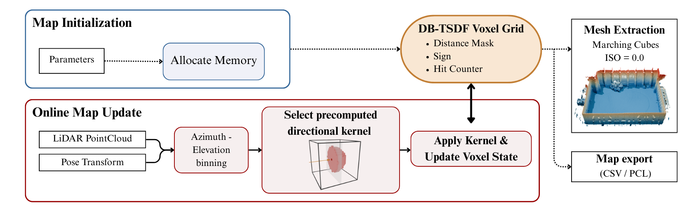

DB-TSDF fuses LiDAR point clouds into a dense signed distance field using fixed-size directional kernels. The per-frame update cost is bounded and largely independent of map resolution, enabling high-resolution CPU mapping.
DB-TSDF: Directional Bitmask-based TSDF for Efficient Volumetric Mapping
CPU-only TSDF mapping with constant per-scan time via directional kernels and bitmask distance encoding. Open-source implementation and evaluation assets available.
Overview
Method
Each LiDAR return selects a precomputed, direction-dependent kernel (aligned to azimuth/elevation bins) and applies a bitwise AND update to the voxel’s 32-bit distance mask. A hemispherical shadow region increments a saturating counter to confirm occupancy. The compact 8-byte voxel layout is cache-friendly and parallelizable.

Results
Qualitative results and timings. See the paper for full quantitative comparisons.
Citation
If you use DB-TSDF, please cite:
BibTeX
@inproceedings{Maese2025DBTSDF,
title = {DB-TSDF: Directional Bitmask-based Truncated Signed Distance Fields for Efficient Volumetric Mapping},
author = {Maese, Jos{\'e} E. and Merino, Luis and Caballero, Fernando},
booktitle = {Proceedings of ...}, /* update venue when available */
year = {2025},
note = {Paper: https://arxiv.org/html/2509.20081v1, Code: https://github.com/robotics-upo/DB-TSDF}
}
Funding
This work was supported by PICRA 4.0 (PLEC2023-010353) funded by MCIN/AEI and the Spanish Research Agency, and by COBUILD (PID2024-161069OB-C31) funded by MICIU/AEI and the European Regional Development Fund (FEDER, EU).